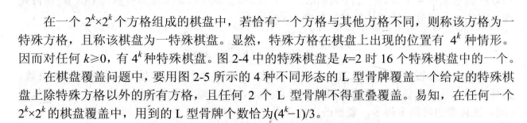
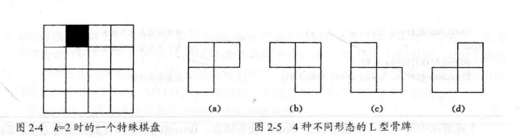
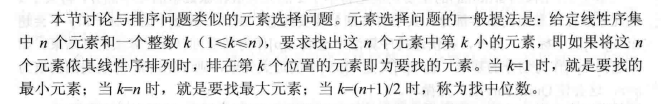

算法分析与设计编程题 递归与分治策略
棋盘覆盖
题目描述


解题代码
1 | // para: 棋盘，行偏移，列偏移，特殊行，特殊列 |
线性时间选择
题目描述

解题代码
1 | int partition(vector<int>& nums, int left, int right) { |
本博客所有文章除特别声明外，均采用 CC BY-NC-SA 4.0 许可协议。转载请注明来源 PageFault！
 微信
微信 支付宝
支付宝
相关推荐

2022-01-16
LeetCode周赛总结 第276场
本次周赛相对比较简单，前三题花的时间比较短，但无奈最后一题还是没思路。。。 将字符串拆分成若干长度为 k 的组题目链接将字符串拆分成若干长度为 k 的组 解题思路遍历字符串 s 的每个字符并加入到一个临时字符串中，当此临时字符串长度为 k 时，加入到结果数组中并清空此字符串。若此时遍历到字符串的最后一个字符且此时临时字符串长度没有达到 k 时，则向其末尾填入字符 fill 直到临时字符串长度达到 k，再加入到结果数组中。 解题代码123456789101112131415161718192021class Solution {public: vector<string> divideString(string s, int k, char fill) { vector<string> res; string newStr; for (int i = 0; i < s.size(); i++) { newStr += s[i]; i...

2023-08-28
算法分析与设计编程题 动态规划
矩阵连乘题目描述 解题代码12345678910111213141516171819202122232425262728293031323334353637void printOptimalParens(vector<vector<int>>& partition, int i, int j) { if (i == j) cout << "A" << i; // 单个矩阵，无需划分 else { cout << "("; printOptimalParens(partition, i, partition[i][j]); printOptimalParens(partition, partition[i][j] + 1, j); cout << ")"; }}// nums[i]: nums[0]为矩阵A1的行数，nums[i](i >= 1)表示矩阵Ai的列数// 如输入为 nums ...

2023-07-03
数据结构编程题 顺序表
删除最小值题目描述从顺序表中删除具有最小值的元素（假设唯一）并由函数返回被删元素的值。空出的位置由最后一个元素填补，若顺序表为空，则显示出错信息并退出运行。 解题代码123456789101112131415bool deleteMin(vector<int>& nums, int& val) { if (nums.empty()) { return false; } int minVal = INT32_MAX, minIdx = 0; for (int i = 0; i < nums.size(); ++i) { if (minVal > nums[i]) { minVal = nums[i]; minIdx = i; } } nums[minIdx] = nums.back(); val = minVal; return true;&...

2023-01-08
LeetCode周赛总结 第327场
由于考研等因素的影响，已经时隔一年没有参加力扣周赛了，长时间没有好好琢磨算法题，思维敏捷度确实有所下降，好在这次周赛前两题都没有什么难度，但第三题却把简单问题想复杂了，第四题就基本上都没怎么读题了。。。 正整数和负整数的最大计数题目链接正整数和负整数的最大计数 解题思路直接依照题意统计该数组中正整数和负整数的个数，然后返回较大个数即可，送分题。 解题代码123456789101112131415class Solution {public: int maximumCount(vector<int>& nums) { int cnt1 = 0, cnt2 = 0; for (int i = 0; i < nums.size(); ++i) { if (nums[i] > 0) { ++cnt1; } else if (nums[i] < 0) { ...

2023-08-04
数据结构编程题 二叉树
二叉树定义以下为本文解题代码的二叉树定义。 123456struct TreeNode { int val; TreeNode* left, *right; TreeNode(int val = 0, TreeNode* left = nullptr, TreeNode* right = nullptr) : val(val), left(left), right(right) {}}; 非递归先序遍历题目描述编写先序遍历二叉树的非递归算法。 解题代码12345678910111213141516void nonRecurPre(TreeNode* root) { if (root == nullptr) return; stack<TreeNode*> s; while (root != nullptr || !s.empty()) { if (root != nullptr) { cout << root->val << " "; s...

2023-07-17
数据结构编程题 栈和队列
判断合法序列题目描述假设 I 和 O 分别表示入栈和出栈操作，栈的初态和终态均为空，入栈和出栈的操作序列可表示为仅由 I 和 O 组成的序列，可以操作的序列称为合法序列，否则称为非法序列。编写一个算法，判定所给的序列是否合法。若合法，返回 true，否则返回 false. 解题代码123456789101112131415bool isLegalSequence(const string& sequence) { int iCnt = 0; for (int i = 0; i < sequence.size(); ++i) { if (sequence[i] == 'I') { ++iCnt; } else { --iCnt; } if (iCnt < 0) { return false; } &...